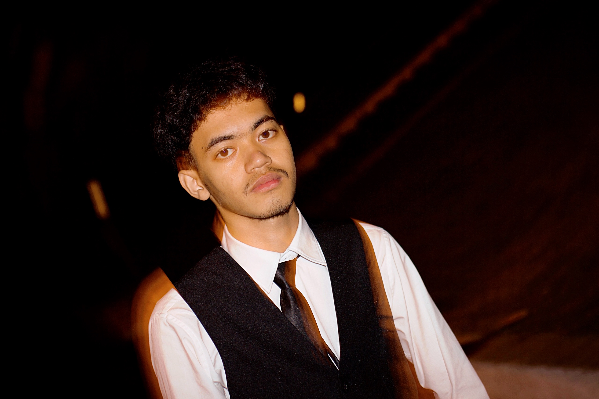

Halo, Saya
Rahmat Ferdiansyah
Lulusan Teknik Komputer Universitas Syiah Kuala yang memadukan keahlian analitis data, kecerdasan buatan (AI), software development, dan 2+ tahun pengalaman profesional di industri kreatif.

Sarjana Teknik Komputer
Universitas Syiah Kuala
Professional Summary
A Computer Engineering graduate from Syiah Kuala University with a specialization and deep interest in Data Analysis, Data Science, Artificial Intelligence and Software Development.
Backed by two years of professional experience in the creative industry (Graphic Design, Video Editing, and Social Media Optimization), which honed skills in data visualization, cross-departmental communication, and creative problem-solving.
Possesses a proven track record in processing research data using SQL and Python, building automation solutions, and managing data-driven logistics operations. Ready to contribute to data-driven decision-making and the development of innovative technology products.
Focus Area
Data and Software Developer
Creative Skill
Visual & Branding